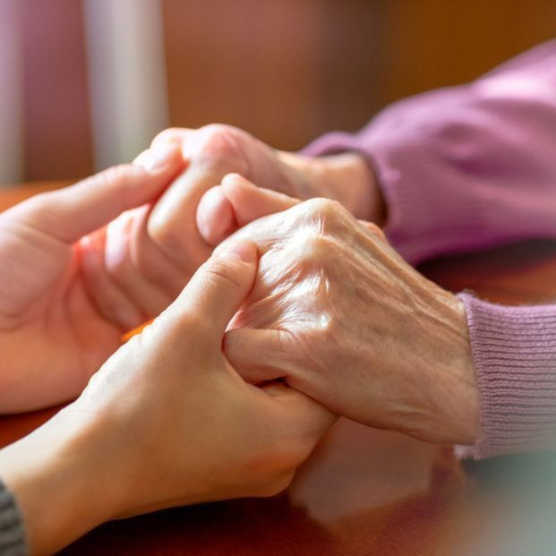
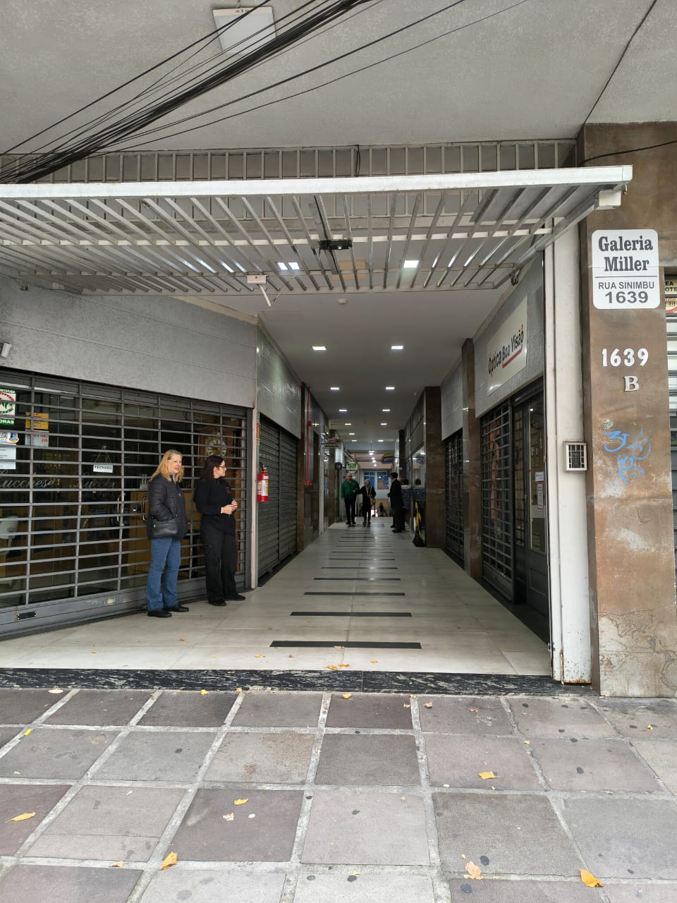
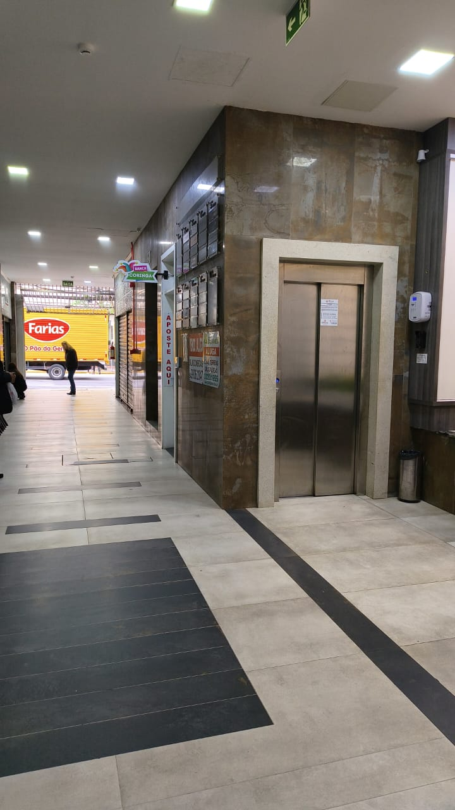
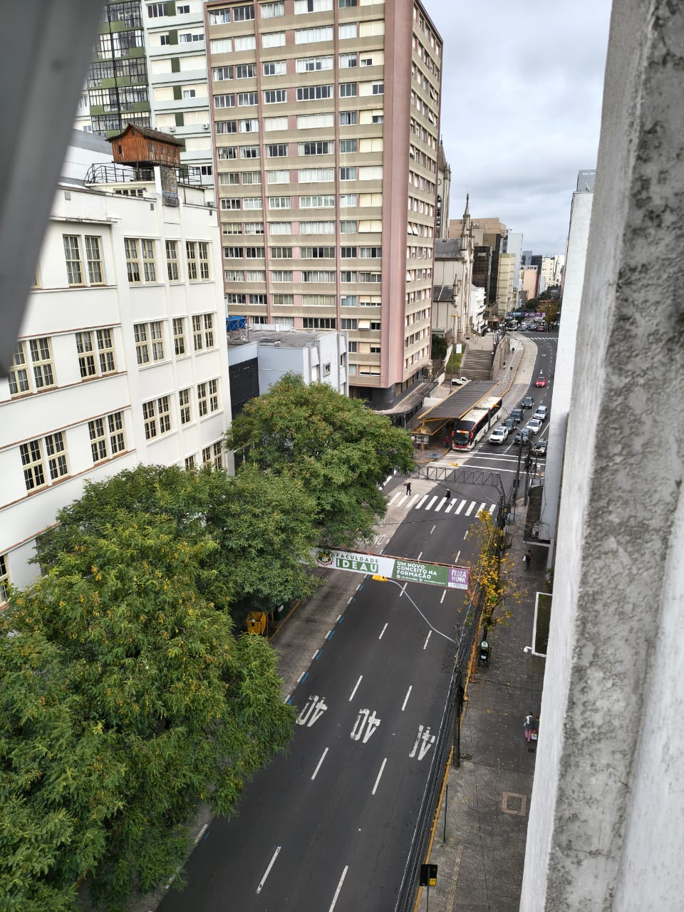
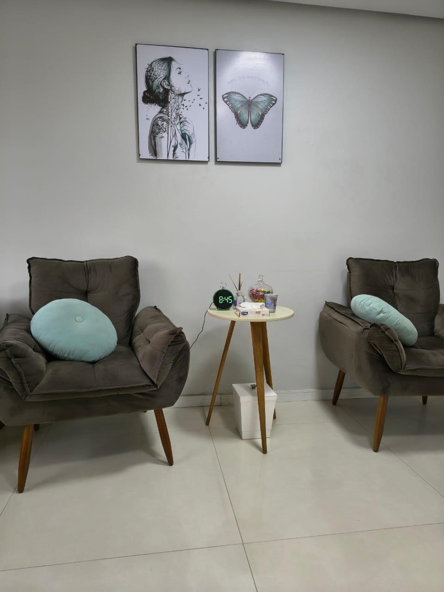
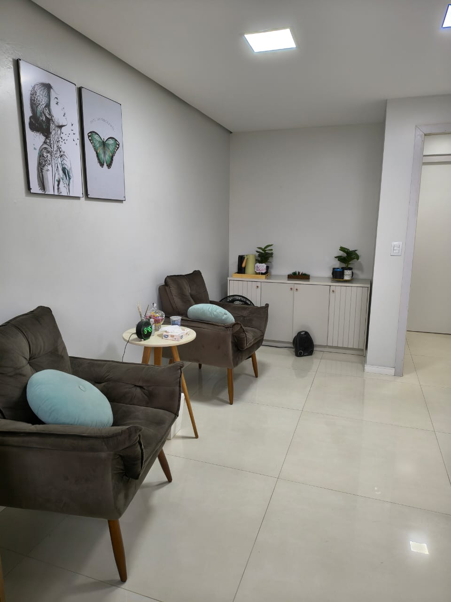
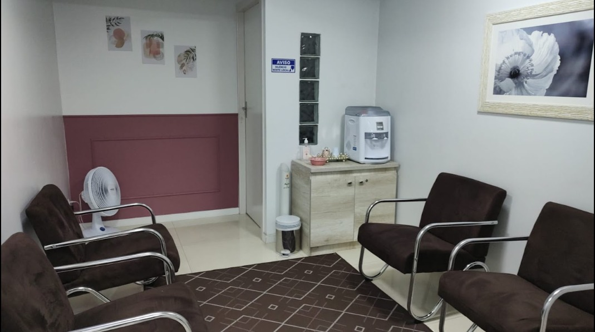
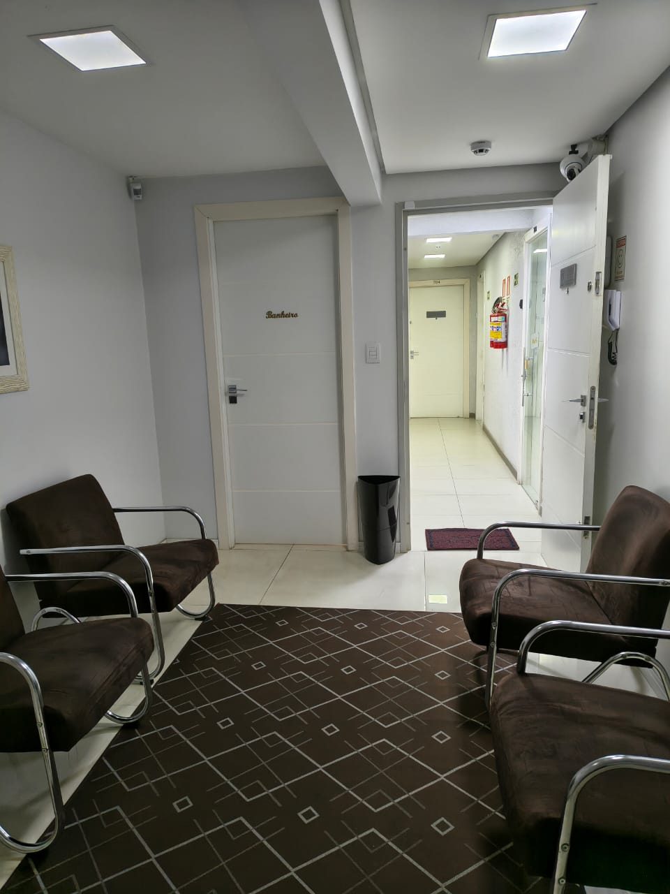

Atendimento Presencial
Consultório no Centro de Caxias do Sul, ao lado da Praça Dante. Ambiente acolhedor, pensado para o conforto e a segurança de quem chega.
Disponível para todas as idades
Algumas dores se manifestam em forma de silêncio, isolamento, irritação, desânimo ou falta de vontade de viver. Cuidar da saúde emocional também é um ato de amor. Ofereça ao seu familiar idoso a oportunidade de ser ouvido, acolhido e cuidado.
Psicóloga CRP 07/37863 · Pós-graduanda em Envelhecimento Humano
Acompanhamento psicológico para pessoas idosas, com escuta paciente, presença genuína e atendimento adaptado à sua realidade: na clínica, online ou no conforto da sua casa.
Psicóloga com especialização em Envelhecimento Humano, com atuação dedicada à saúde mental de pessoas idosas. Meu trabalho combina conhecimento técnico, atualização constante e experiência prática com as questões do envelhecimento.
Atualmente, atuo no Hubb Residencial Sênior e coordeno grupos voltados à população idosa. Minha trajetória inclui experiências no UCS Sênior, no Projeto Reconectar da Associação Mão Amiga e em projetos de promoção do envelhecimento saudável na região de Caxias do Sul.
Abordagem com eficácia comprovada para ansiedade, depressão e desafios do envelhecimento. A TCC trabalha a relação entre pensamentos, emoções e comportamentos, com estratégias práticas para lidar com perdas, mudanças, preocupações, aposentadoria, saúde e relacionamentos. Com objetivos claros e técnicas para o dia a dia, fortalece recursos emocionais, autonomia e qualidade de vida.
Se sair de casa hoje é difícil, por mobilidade, logística ou insegurança, eu posso ir até você em Caxias do Sul. O cuidado não pode esperar.
Cada sessão respeita o tempo que você precisa para colocar as coisas em ordem. Aqui nenhum sentimento é "frescura" ou "coisa da idade".
Conhecer a psicóloga, sentir se faz sentido, entender como funciona. Sem compromisso de continuar. Só um espaço para você decidir com calma.
anos de prática clínica
atendimentos realizados
modalidades disponíveis
público com formação específica
Cada modalidade mantém a mesma qualidade de escuta. A escolha é sobre o que faz sentido pra você agora.
Consultório no Centro de Caxias do Sul, ao lado da Praça Dante. Ambiente acolhedor, pensado para o conforto e a segurança de quem chega.
Disponível para todas as idades
Sessões por vídeo, com a mesma qualidade da terapia presencial. Acontecem pelo Google Meet ou pela videochamada do WhatsApp, para quem já usa o aplicativo no dia a dia. Ideal para quem mora em outra cidade ou prefere ficar em casa.
Disponível para todas as idades

Vou até você, em Caxias do Sul. Para quem tem dificuldade de mobilidade, mora longe do centro ou prefere a sessão no próprio espaço.
Exclusivo para pessoas 60+
Sem burocracia, sem questionário interminável. Só os passos necessários para começar bem.
Você me envia uma mensagem. Eu respondo pessoalmente, tiramos as primeiras dúvidas e marcamos a primeira sessão no dia e horário que funciona para você.
Você decide: clínica, online ou domicílio. Sem custo de deslocamento adicional para domicílio dentro de Caxias do Sul.
A primeira sessão é um momento de acolhimento, escuta e construção do vínculo terapêutico. Conversaremos sobre sua história, suas necessidades, expectativas e os motivos que o trouxeram para a terapia.
Também explico como funciona o processo terapêutico, como a Terapia Cognitivo-Comportamental pode ajudar e tiramos juntos as dúvidas sobre o acompanhamento.
Não há respostas certas nem um roteiro a seguir. É um espaço para que você possa falar sobre aquilo que considera importante, no seu tempo e da sua maneira.
A partir das primeiras sessões, construímos juntos um plano de trabalho com objetivos claros, respeitando sua história, necessidades e momento de vida. Trabalhamos com ferramentas da Terapia Cognitivo-Comportamental para trazer mais bem-estar, autonomia e qualidade de vida no dia a dia.
Essa é uma dúvida muito comum entre familiares que se preocupam com o bem-estar emocional de uma pessoa idosa.
O primeiro passo é entender que a decisão de iniciar a terapia precisa partir da própria pessoa. Pressão excessiva ou insistência constante pode gerar ainda mais resistência.
Em vez de falar em "terapia", converse sobre o que seu familiar está vivendo. Fale sobre como você percebe o sofrimento dele, com respeito e sem julgamentos.
Algumas coisas podem ajudar:
Também me disponibilizo para uma conversa inicial sem compromisso. Muitas vezes, a resistência vem da falta de informação.
Funciona, e há literatura científica robusta provando isso. A TCC é especialmente eficaz porque trabalha com objetivos concretos, não só com "falar sobre o passado". O que muda é a abordagem: o foco passa a ser sentido, presença, qualidade das relações e adaptação às mudanças da fase.
Eu vou até a sua casa em Caxias do Sul, na data e horário combinados. O atendimento dura o mesmo tempo da sessão na clínica (50 minutos) e mantém o mesmo sigilo. Só precisamos de um cômodo onde possamos conversar com privacidade.
Não. Muita gente procura terapia por sentir que algo "não está fluindo": ansiedade, dificuldade com mudanças, luto, distanciamento da família, perda de propósito. Tudo isso é motivo válido. Não precisa esperar piorar.
Sim, quando bem conduzida. A pesquisa mostra resultados equivalentes para a maioria das queixas. O essencial é ter um lugar tranquilo, fones de ouvido e uma conexão estável. Se tiver dificuldade técnica, a gente resolve junto na primeira tentativa.
O atendimento é particular. Forneço recibo para reembolso de planos que oferecem essa cobertura ou para abatimento no Imposto de Renda como despesa médica.
A maioria das pessoas nota mudanças nas primeiras 6 a 10 sessões: padrões de pensamento, ferramentas para lidar com a ansiedade, qualidade do sono. Mas cada pessoa tem um tempo. O importante é que cada sessão entregue algo concreto.
Avaliações reais do Google
Psicóloga muito atenciosa e acolhedora. As sessões acontecem em um ambiente seguro, que facilita falar sobre questões difíceis. Tenho percebido mudanças positivas no meu modo de pensar e lidar com a ansiedade. Recomendo.
A Dr Marisa é uma excelente profissional, adoro as sessões dela, andam me ajudando muito. Igual a ela não tem, por mais profissionais como ela.
Atendimento de alta excelência, competente no que faz e trata de assuntos com maior carinho e delicadeza!!
Profissional competente e muito carismática, ótima ouvinte e carinhosa em suas respostas, deixando a gente mais leve com os desabafos. Muito querida!!!
A psicóloga Marisa Perini para mim é uma profissional ímpar, tem postura, altivez e ao mesmo tempo muita sensibilidade. É clara no que quer nos passar, fazendo que todo assunto seja diluído com simplicidade e entendimento. Só tenho gratidão!
Minha experiência com a psicóloga Marisa me ajudou a entender muito sobre valorizar mais os momentos de convivência com outras pessoas. A Marisa é uma ótima profissional, super recomendo!!
Profissional competente e atenciosa. Ofereceu excelentes reflexões nos encontros em grupo, favorecendo muito nossa saúde mental. Indico muito o trabalho!
A Dra. Marisa é uma pessoa especial, atenciosa, disponível e entendeu perfeitamente o meu dilema e como trabalhar com ele.
Galeria Miller · Rua Sinimbu, 1639 · Centro · Caxias do Sul

Entre pela Galeria Miller, na Rua Sinimbu, 1639. A entrada é pelo corredor central da galeria.

Logo ao entrar pela Sinimbu, o elevador fica à esquerda. Suba até o andar do consultório.

Você chegou. O consultório fica com vista para o centro de Caxias do Sul.
Consultório no Centro de Caxias do Sul, atendimentos online de qualquer lugar e visitas a domicílio com a mesma escuta cuidadosa.




"Quando a situação for boa, desfrute-a. Quando a situação for ruim, transforme-a. Quando a situação não puder ser transformada, transforme-se."
Viktor Frankl